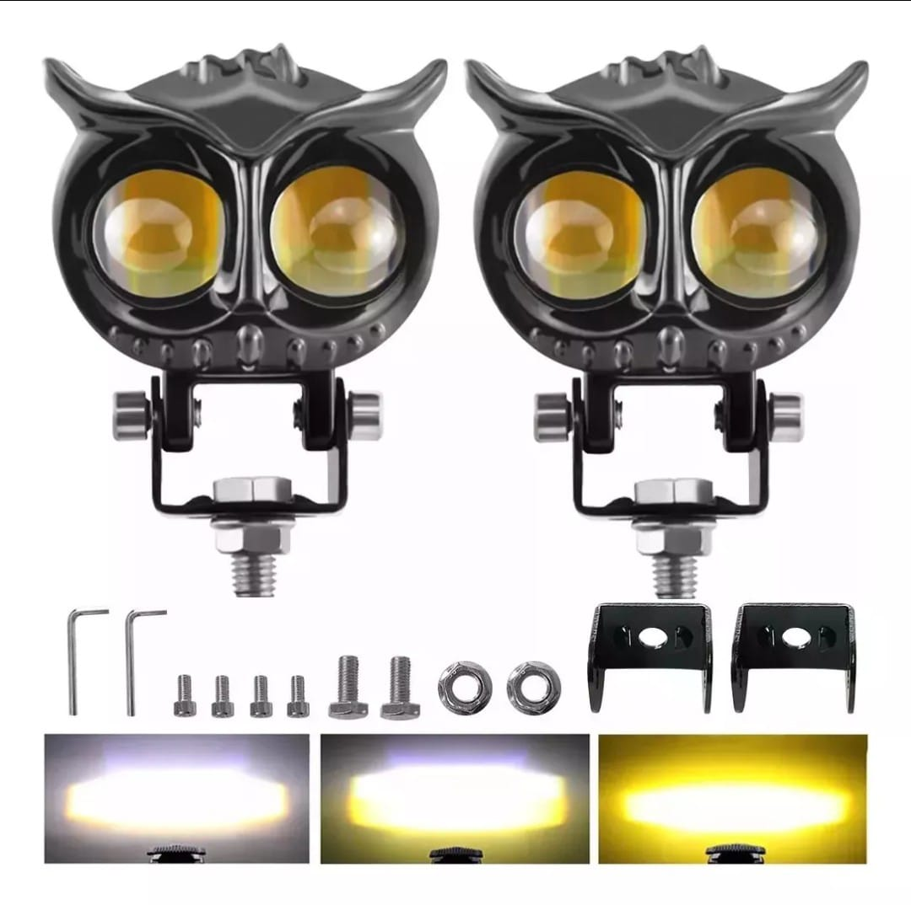
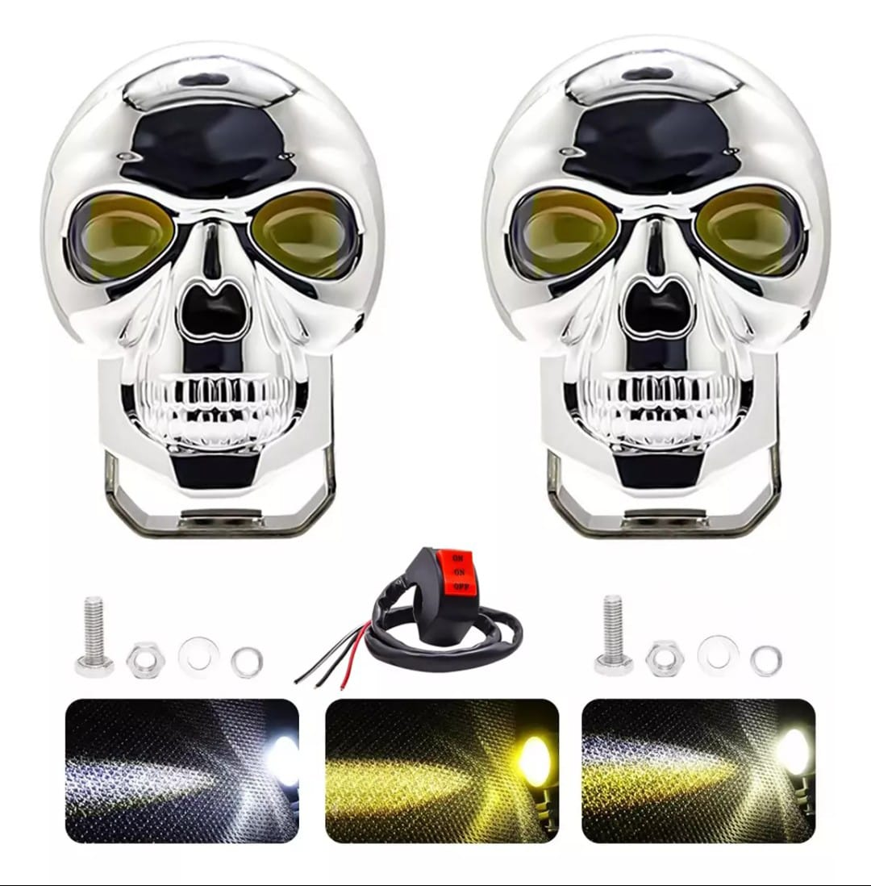
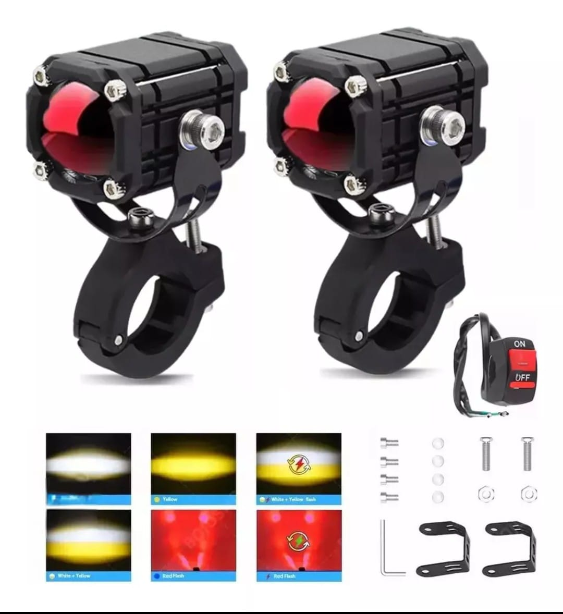
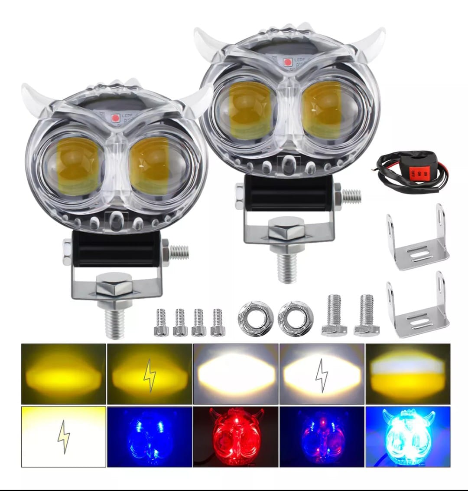
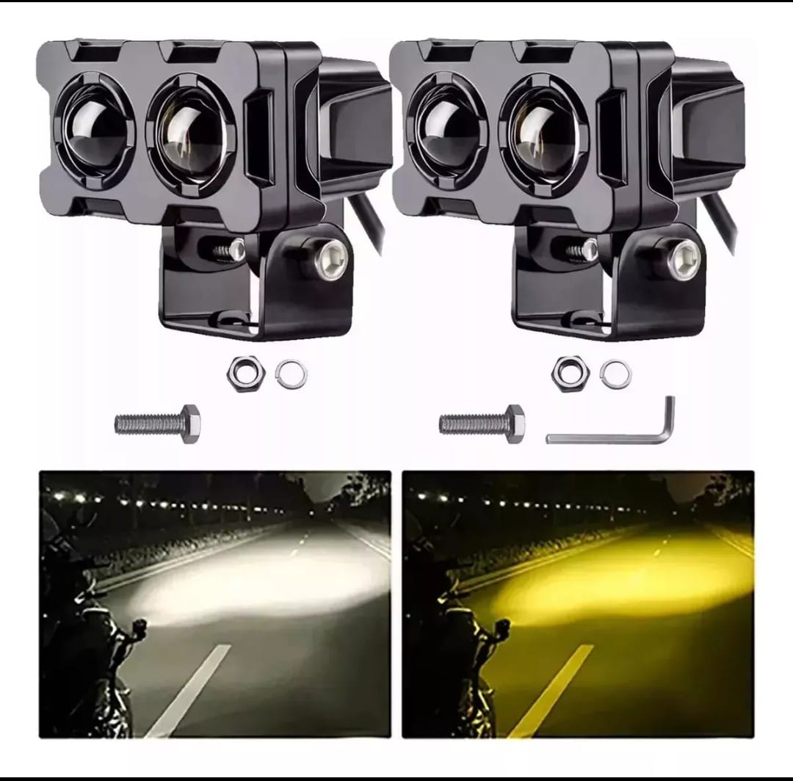
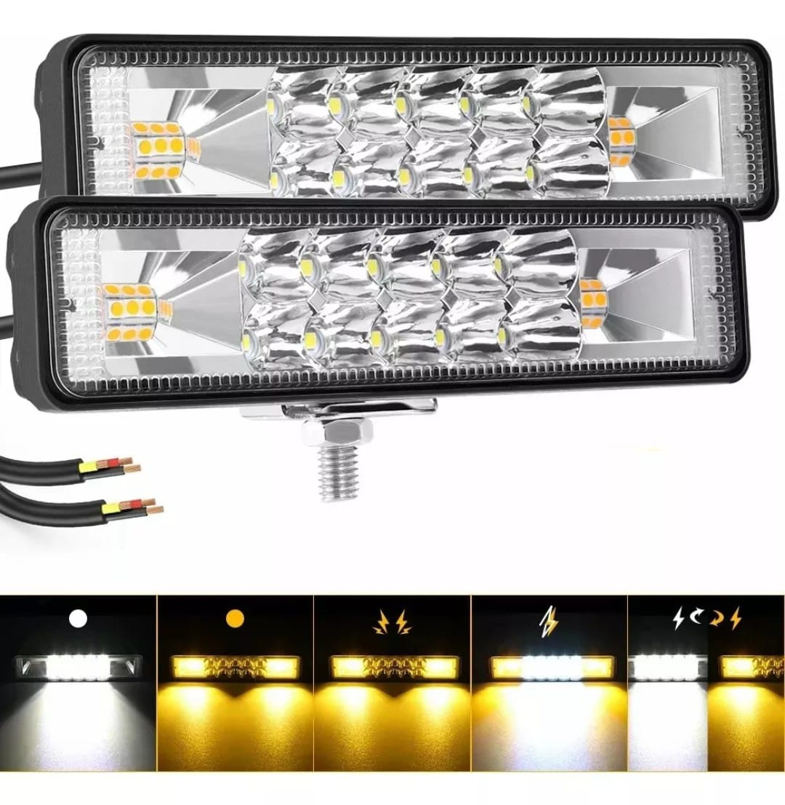
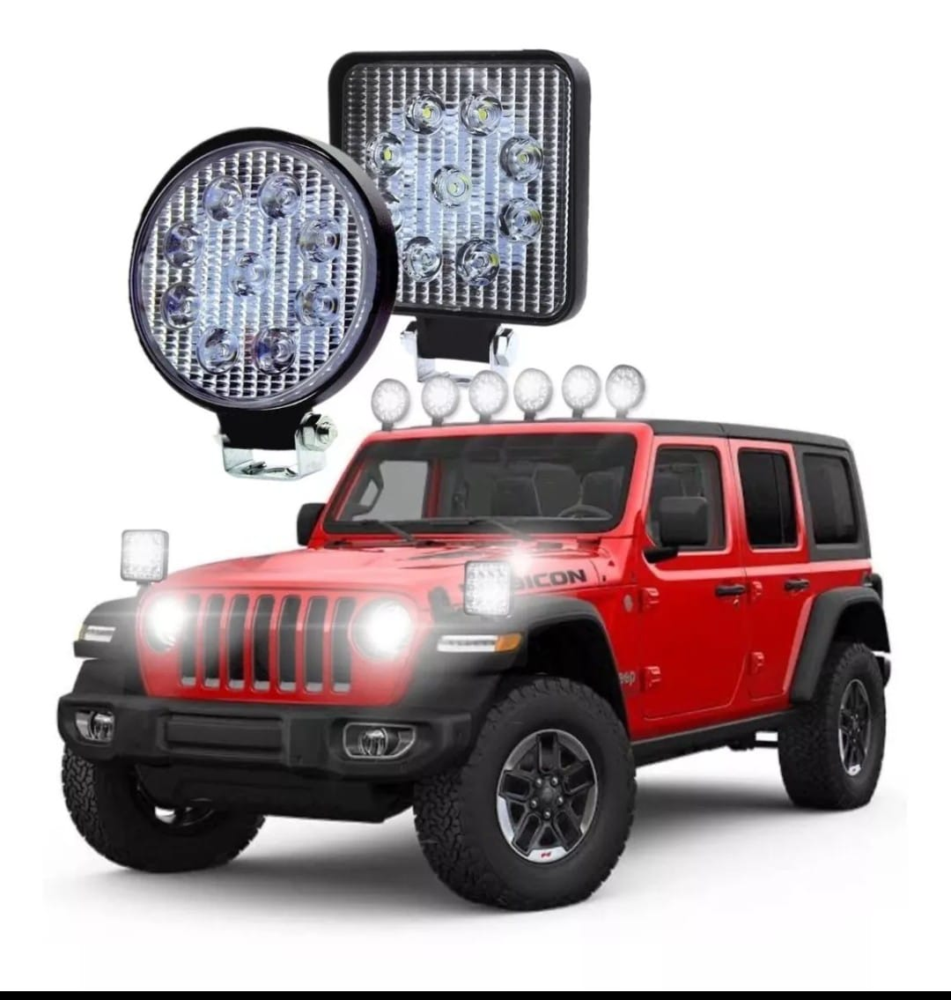
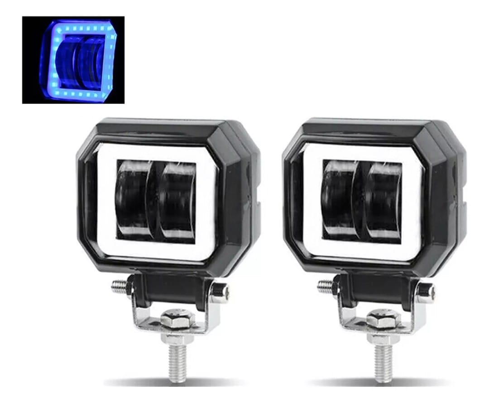
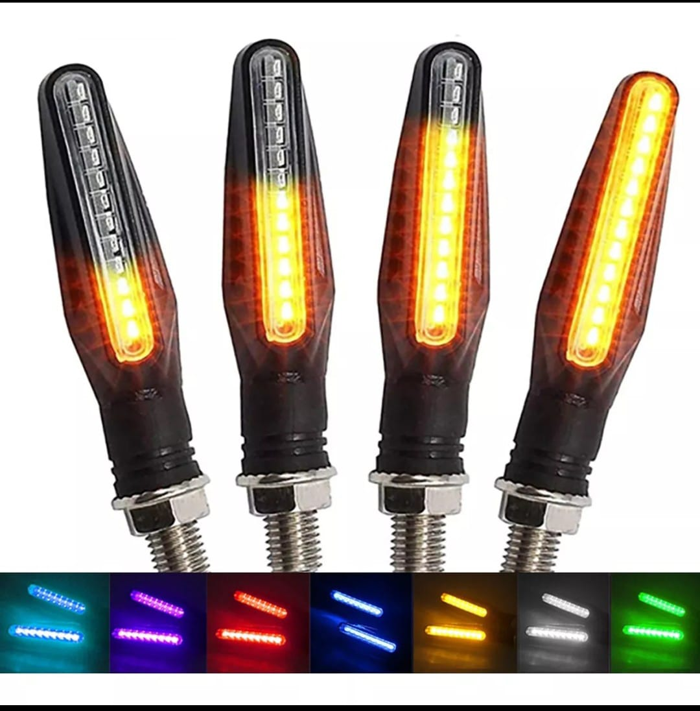
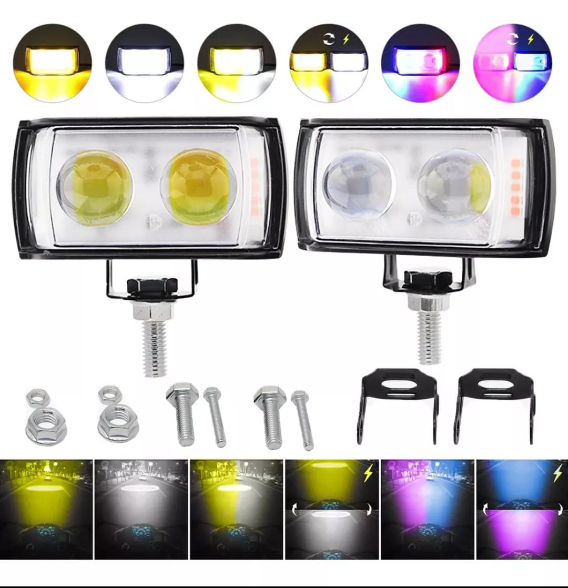

En D.A.Y. Motors no solo cuidamos el rendimiento de tu moto, también la hacemos destacar. Descubre nuestra amplia selección de accesorios que combinan funcionalidad y estilo, ideales para personalizar tu motocicleta y mejorar tu experiencia en cada ruta.
| Accesorio |
Descripción |
 |
faros LED de última generación, perfectos para motos, cuatrimotos, 4x4 y vehículos todo terreno.
Doble función: luz de largo alcance y luz de trabajo amplia.
Alta potencia: máxima iluminación incluso en las rutas más oscuras.
Estructura resistente: fabricados para soportar polvo, lluvia y vibraciones extremas.
Fácil instalación: incluye soportes ajustables.
|
 |
Multifunción 3 en 1: luz de freno, direccionales dinámicas y luz trasera.
Tecnología LED: iluminación potente y ahorro de energía.
Instalación sencilla: adaptable a casi cualquier moto.
Diseño flexible: ideal para carenados curvos o superficies irregulares.
Resistente al agua: preparada para todo tipo de climas.
|
> |
Luz blanca ultrabrillante, perfecta para conducción nocturna.
Consumo eficiente, mayor duración y menor calentamiento.
Carcasa resistente al agua y golpes.
Compatible con la mayoría de modelos.
Fácil instalación con soporte ajustable.
|
 |
Multicolor: Elige entre colores vibrantes como azul, rojo, blanco, morado y más.
Función dinámica: luz fija para circulación y luz secuencial para direccionales.
Flexible y recortable: se adapta a cualquier forma de faro, perfecta para motos deportivas, urbanas o personalizadas.
Resistente al agua: sin miedo a la lluvia o el polvo.
Fácil instalación: compatible con sistemas de 12V.
|
 |
Focos LED H4 - Alta Potencia y Máxima Visibilidad
Tipo de conector: H4 (compatible con muchos modelos)
Tecnología: LED de alto brillo
Voltaje: 12V - 24V (compatibles con sistemas eléctricos)
Temperatura de color: 6000K (Luz blanca fría, ideal para mejorar la visibilidad nocturna)
|
 |
Doble iluminación (Blanco y Amarillo): Ideal para cualquier condición climática.
Lente tipo lupa: Asegura un haz de luz más concentrado y potente.
Material de alta resistencia: Carcasa de aluminio con diseño disipador de calor.
Soporte ajustable: Fácil instalación y adaptación a diferentes ángulos.
Incluye kit de instalación: Tornillos, arandelas y tuercas para un montaje rápido y seguro.
Interruptores incluidos: Controla fácilmente el encendido y cambio de luz.
|
 |
Tipo: Faros LED auxiliares rectangulares
Cantidad: 2 unidades
Material: Carcasa de aluminio resistente con disipador de calor
Color del cuerpo: Negro
Iluminación: LED de alta potencia con luz blanca brillante
Modos de luz: Luz de enfoque y luz de dispersión combinadas
Lente: Acrílico resistente a impactos
Base de montaje: Ajustable para diferentes ángulos de iluminación
Incluye: Tornillos, tuercas y soportes para instalación
|
 |
Luces LED en Forma de Calavera para Motos
Diseño innovador con forma de calavera para un look llamativo y personalizado.
Iluminación LED de alta potencia con luz blanca y amarilla, ideal para mejorar la visibilidad en carretera.
Fabricadas con materiales de alta calidad y resistencia al agua, perfectas para cualquier clima.
Fácil instalación y compatibilidad con la mayoría de motocicletas.
Incluye interruptor y accesorios de montaje.
|
 |
Luces LED con Diseño Futurista para Motos.
Diseño inspirado en máscaras tácticas para un aspecto imponente y moderno.
Iluminación LED de alta potencia con tres modos de luz: blanca, amarilla y combinación de ambas.
Fabricadas con materiales de alta resistencia y protección contra el agua y el polvo.
Incluyen interruptor de encendido y accesorios para una instalación sencilla.
Compatibles con la mayoría de motocicletas y vehículos todoterreno.
|
|  |
Color: negro
Tipo de lámpara: foco
Temperatura de color: 6000 K/3000 K
Brillo: 6000 lm
Lumen: 3000 lm por lámpara, 6000 lm por par
Potencia: 12 W
Voltaje: voltaje 12V
Material: aleación de aluminio de aviación
Vida útil: hasta 30.000 horas en uso normal
Temperatura de funcionamiento: de -40 grados Celsius a +80 Celsius
|
|  |
Potencia: 38W
Lumen:3000LM
Nombre del producto:Dos Color Faros Led
Color de la carcasa de la luz: negro
Bicolor: blanco/ámbar
Temperatura de color: 3000k, 6000k
Material: aleación de aluminio fundido a presión cáscara, lente óptica de PC
Temperatura de trabajo: -40-185
Grado de impermeabilidad: IP67
Vida útil: 50000 horas
Lista de paquetes: Piloto LED*2, Juego de tuercas*2
|
|  |
6 Modos de Luz : Amarillo (luz de cruce), Blanco (luz de carretera) , Rojo:(ojo de demonio), (flash); Nota: 1.Amarillo puede ser luz de carretera y blanco puede ser luz de cruce, sólo tiene que instalar de acuerdo a su necesidad
Función de luz blanca lo suficientemente brillante para el día y la noche, la función de luz ámbar ayuda a ver más claro en la niebla / lluvia / nieve, y la función de luz estroboscópica garantizar una advertencia más eficaz a otros vehículos.
|
|  |
10 modos de iluminación
Modo 1: haz ámbar 3000k/amarillo (utilizado como luz antivaho).
Modo 2:Luz estroboscópica amarilla
Modo 3:Blanco 6000K para luz de carretera (utilizado como luz de marcha)
Modo 4: Luz estroboscópica blanca
Modo 5:Luz amarilla+blanca(4500K)
Modo 6: Luz estroboscópica amarilla y blanca
Modo 7: Luz azul
Modo 8: Luz roja
Modo 9: luz roja y azul
Modo 10: Luz estroboscópica roja y azul
|
|  |
Nombre del producto: Faros Auxiliares
Color: focos blancos y amarillos.
Peso: 220g
Accesorios: soporte de luz de trabajo, tornillos
Voltaje de entrada: 9-60V
Potencia óptica: luz amarilla de haz bajo 30w, luz amarilla y blanca de haz alto 45w
Efecto de iluminación: luz amarilla/luz blanca
Material del producto: cuerpo de lámpara de aluminio engrosado
Modelos aplicables: vehículos eléctricos/motocicletas y otros modelos
|
|  |
1. Kit de chips Led para faros: nuestras 16 luces de trabajo Led utilizan chips Led avanzados y proporcionan 6400lm,6500K luz blanca súper brillante, que es mucho más brillante que los 14 chips de productos similares.
|
|  |
Cantidad de Leds: 9 Leds
Consumo: 60 Watts
Voltaje de operación: 12Vcc
Lúmenes: 3000LM
Tipo de proyección: Spot
Temperatura color: 6000k – 2200K
Color de luz: Blanco Frio
Tiempo de vida: 50,000 horas reales
Material Aluminio con cubierta de policarbonato resistente al impacto
Distancia de penetración: 250m
|
|  |
FAROS CUADRADOS CON LUPA, ESTROBO Y ARILLO GEL AZUL 12/80V
PAR DE FAROS AUXILIARES PARA MOTOCICLETA
LUZ LED BLANCA CON LUPA
OJO DE ÁNGEL AZUL
INCLUYE BASES Y TORNILLOS PARA SU INSTALACIÓN
MEDIDAS: ANCHO 7 CM, ALTO 6 CM (CON BASE 8 CM), PROFUNDIDAD 4.4 CM
|
|  |
Peso: 0,132 kg
Tamaño del producto: 11*6*4cm
Material del producto: nuevo plástico ABS + perlas de lámpara LED
Modelos aplicables: modelos con voltaje de 12v
Orificio de montaje: 10MM
|
 |
Color de la carcasa: negro
Material: carcasa de aluminio + cuentas de luz súper brillantes + lentes de concentración
Posicionamiento: iluminación decorativa
Fuente de luz: 180 grados en tres direcciones - Luz LED central
Parámetros: voltaje dc12v, Potencia 3w, valor óptico 70 - 200lm
Colores disponibles: blanco, azul, rojo, amarillo, verde, Rosa - morado, azul hielo
Uso: luz antiniebla delantera y trasera / luz de circulación diurna / luz de giro / luz de parachoques / luz de marcha atrás / flash de advertencia
|
|  |
6 modos de iluminación: Nuestro foco LED se puede cambiar libremente entre 6 modos.
La luz ámbar/amarilla de 3000 K se usa para luces bajas (usadas como luces antiniebla), la luz blanca de 6000 K se usa para luces altas (usadas como luces de conducción) y la luz blanca y amarilla de 4500 K se usa para iluminación de rango medio.
|